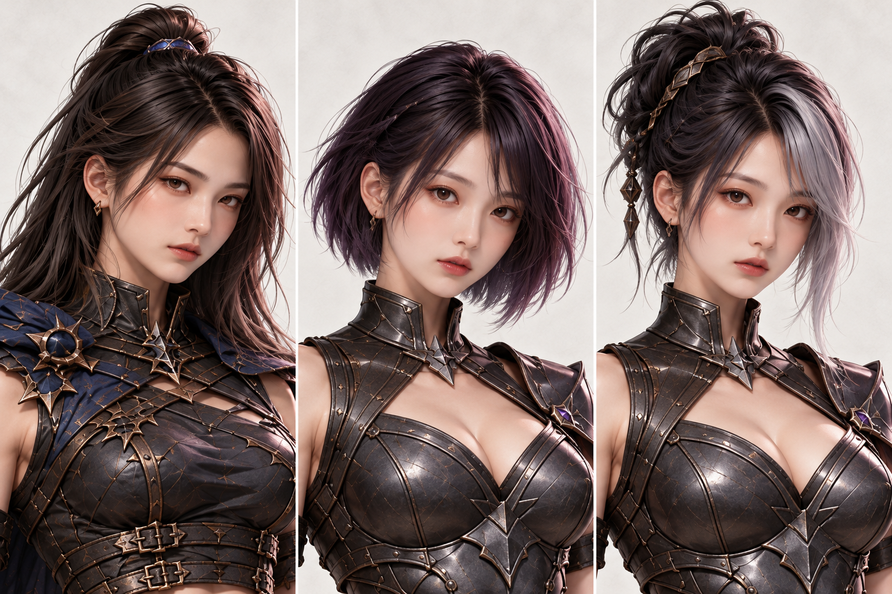
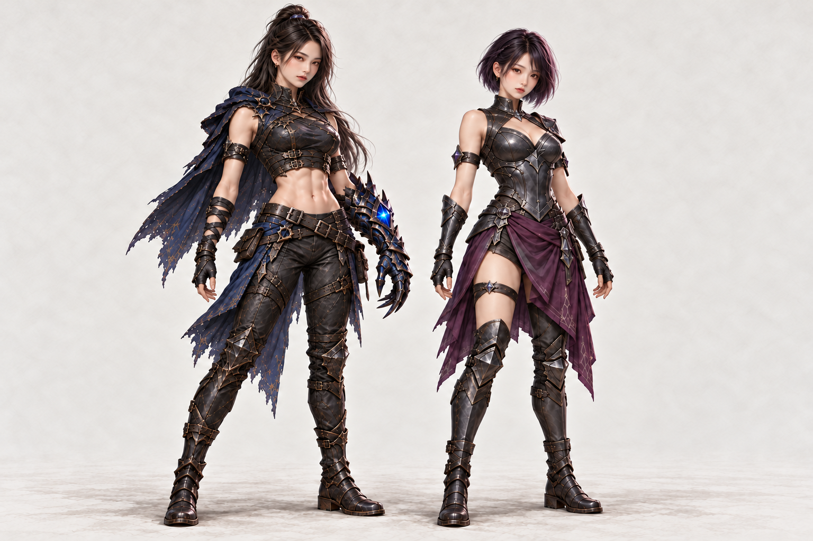
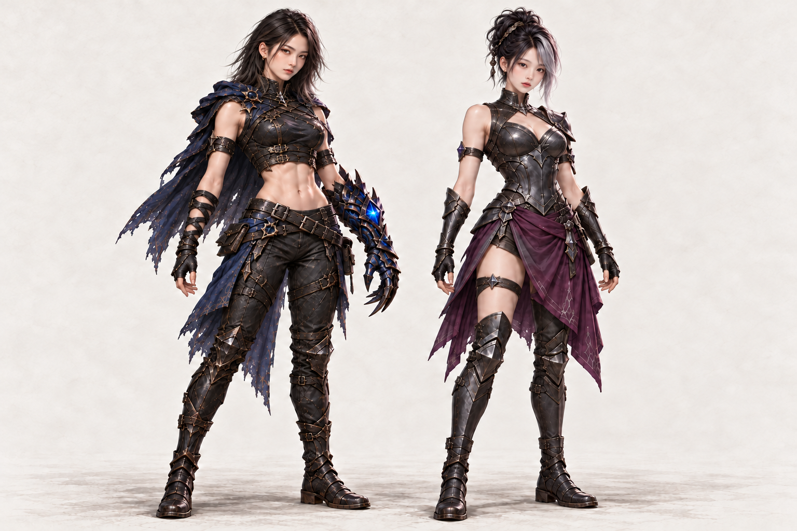

얼굴 확대 · 복근형 원이 참고 / 창법사 리브 참고 2헤어
왼쪽 복근형 · 중앙 창법사 단발 · 오른쪽 같은 창법사 올림머리

원본 크게 보기 ↗복근형은 기존 원이 참고 얼굴 유지, 창법사는 리브 참고 얼굴로 교정했습니다. 채택한 비대칭 단발·올림머리는 유지합니다.
왼쪽 복근형 · 중앙 창법사 단발 · 오른쪽 같은 창법사 올림머리

원본 크게 보기 ↗왼쪽 복근형 얼굴 유지 · 오른쪽 창법사 얼굴 교정

원본 크게 보기 ↗왼쪽 복근형 얼굴 유지 · 오른쪽 창법사 얼굴 교정

원본 크게 보기 ↗